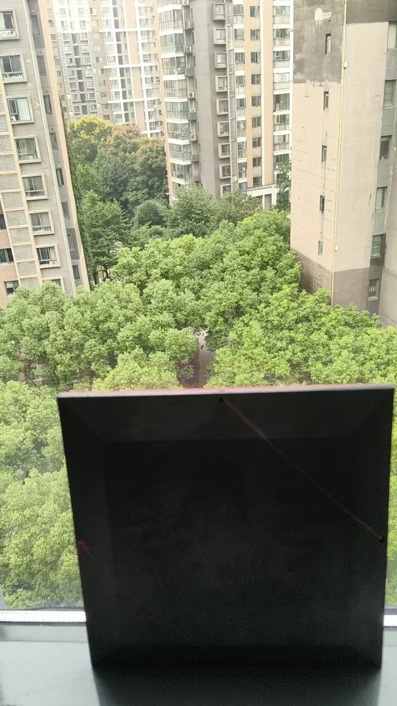
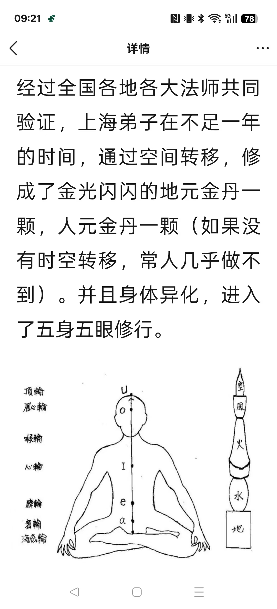
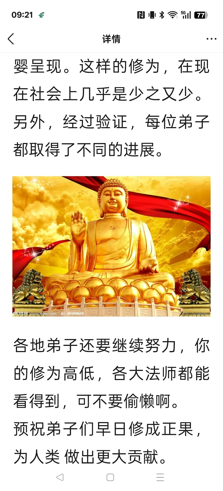
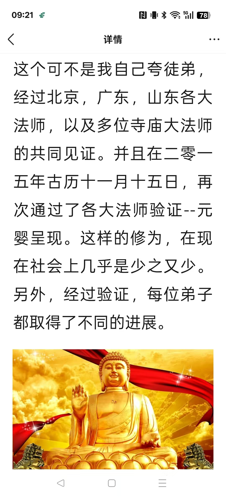
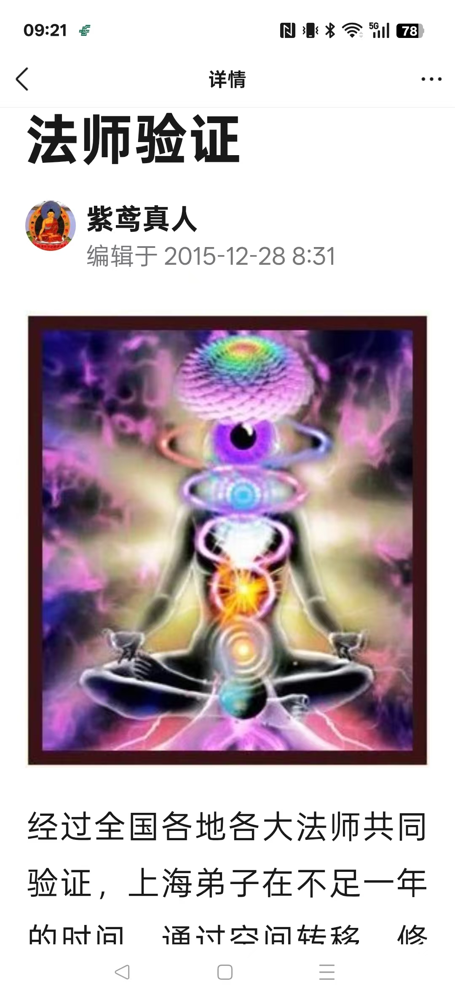

20260919找到你们的原神，修为最高果，时空异位，引领下来
风水布局 原始对话记录
我说大人学赠送小孩，非要给
我没时间带孩子学习
只能快速开发几个功能
小女孩，肚子疼凉痛经，刚说完，还没开始拉手，肚子已经发烫了
[憨笑][憨笑]
上海学生过来助阵，展示
一个男孩子，肩膀受伤过
左腿受伤过
右脚骨折过，并且打篮球，伤过五次
上海这弟子都说的一清二楚
青出于蓝胜于蓝
真没想到，这弟子这么厉害
真是给我长脸了
众人佩服的不得了
增强了他们的信心
第一天刚见面，两个学生提出质疑
另外几个在门外阳台上展示的，还行，
进房间，这两个什么也说不出来
怎么加持也没感觉
看窗外
两个楼角斜冲
就是两个壁刀煞
两个楼的缝
天斩煞

有三个，外煞把房间场搞乱了
用风水罗盘化解了一下
那两个马上身上发热，感应强烈了
看来必须谨小慎微啊
2015年，我QQ空间记录这学生




现在看来都精彩
我不记得我写过
这弟子找出来给学生们看
十几年前，我就做的这么精彩
还有健身房
[强][强][强]
@紫鸢真人 师父时空转移是什么意思！怎么才能做到啊？
我找到你们的原神，修为最高果，时空异位，引领下来
你们就迅速获得超能
@紫鸢真人 我不信 ，你让你几个徒弟都获得超能看看，成人徒弟[偷笑]
[动画表情]
很多成人徒弟有超能，曾经修为境界不同，真人常说人各有福，都不一样
对，师傅领进门，修行在个人
@龙玉 [呲牙][呲牙]
八百多弟子，近七百动是成人
最大的七十多岁
你让他能都能迅速获得成就吗？这个我不相信，能上一半都很难
不在弟子有多少，而是成就的弟子有多少
人人成就
你可以不相信自己的眼睛，但真人是真人，必须相信[憨笑][憨笑][憨笑][憨笑]
我不是教学
是点化得道成仙
这些大人孩子，必须掌握隔空诊病，虚体针灸等绝技
没有针，有治疗效果
人人都会
但不是常人做到的事
不用针，就没有医疗事故，也就永远不但责任
@龙玉 你可以深入研究
别在远处怀疑，你本来早该修练了
一个学生回老家接老公孩子去了，不厉害，怎么能打动人
[呲牙][呲牙][呲牙]
我也希望真人弟子人人可以成就，而不是说食不饱，画饼充饥
[呲牙][呲牙][呲牙]
信不信我画的饼，真能充饥
不信，如果真人开个画饼充饥店，来吃的人都不埃饿就信[呲牙]
[呲牙][呲牙]
画饼充饥，这是意念造物呀[强]
@未来可期 这是什么呀
佛88图
[强][强][强]
找到你们的原神，时空异位，引领下来
有学生问："师父，时空转移是什么意思，怎么才能做到？"
答话只有一句。
"我找到你们的原神，修为最高果，时空异位，引领下来。你们就迅速获得超能。"
问的人不信。他说，你让你几个徒弟都获得超能看看。作者回：很多成人徒弟有超能，"曾经修为境界不同"，人各有福。
质疑一路跟到底。八百多弟子，近七百是成人，最大的七十多岁。"你让他都能迅速获得成就吗？这个我不相信，能上一半都很难。"作者不接这个数："不在弟子有多少，而是成就的弟子有多少。"
后来说到"画饼充饥"。有人说，你真开个画饼充饥店，来的人都不挨饿我就信。他答："信不信我画的饼，真能充饥。"底下有人接一句："画饼充饥，这是意念造物。"
同一篇里，另一头是展示。
一个小女孩肚子疼、凉痛经，话刚说完，还没开始拉手，肚子已经发烫了。上海来的学生助场，一个男孩肩膀伤过、左腿伤过、右脚骨折过，打篮球伤过五次，那弟子都说得一清二楚。作者写"青出于蓝胜于蓝"，"真是给我长脸了"，"众人佩服的不得了"。
也有不顺的。两个学生，第一天刚见面就提出质疑。别人在阳台上展示还行，进了房间，这两个什么也说不出来，怎么加持也没感觉。他看窗外，两个楼角斜冲，是两座壁刀煞；两个楼的缝，是天斩煞——三个外煞把房间的场搞乱了。用风水罗盘化解了一下，那两个马上身上发热，"感应强烈了"。
"看来必须谨小慎微啊。"
后面翻出2015年QQ空间的旧记录。他自己说不记得写过，是弟子找出来给学生们看的。"十几年前，我就做的这么精彩。"
还有一段后来的话，讲他现在的做法：不是教学，是"点化得道成仙"。大人孩子必须掌握隔空诊病、虚体针灸，没有针，有治疗效果。不用针，就没有医疗事故。
末尾一句很轻。"我也希望真人弟子人人可以成就，而不是说食不饱，画饼充饥。"